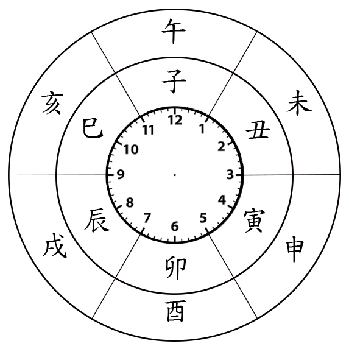

天干地支由來
干支可解讀為植物的主幹和枝條。古人的生活和植物密不可分，從房屋建造到漁獵工具等都會用到竹木花草，而植物的生長又與季節氣候有關，於是衍生出以干支來計日的方式。中國早期的建築以竹子和木材當作樑柱，樑位於頭頂，必須仰頭才看的到，仰頭讓人聯想到看天空，因此衍伸出天干；柱子深埋土中，故為地支。天干地支的後來也被用在信仰祭祀上。中國使用干支計算時間的歷史，最早可追溯至商朝。
十天干與十二地支
十天干: 甲、乙、丙、丁、戊、己、庚、辛、壬、癸
十二地支: 子、丑、寅、卯、辰、巳、午、未、申、戌、亥
計時法

古人將一天分成十二個時辰，每個時晨有兩個小時，子時從二十三點到一點、
丑時從一點到三點、寅時從三點到四點，以此類推。
計月法
寅月是農曆一月，卯月是農曆二月，以此類推
| 農曆 月份 | 一月 | 二月 | 三 | 四 | 五 | 六 | 七 | 八 | 九 | 十 | 十一 | 十二 |
| 地支 | 寅 | 卯 | 辰 | 巳 | 午 | 未 | 申 | 酉 | 戌 | 亥 | 子 | 丑 |
計年法
以十天干和十二地支互相搭配，形成六十年(一甲子)為一周期的循環，週期裡的第一年為甲子年，第二年為乙丑年，以此推續。十二地支有相對應的十二生肖，分別是:鼠、牛、虎、兔、龍、蛇、馬、羊、猴、雞、狗、豬。子對應鼠、丑對應牛，以此類推。
下表為一甲子的年表。
| 甲子 | 乙丑 | 丙寅 | 丁卯 | 戊辰 | 己巳 | 庚午 | 辛未 | 壬申 | 癸酉 |
| 甲戌 | 乙亥 | 丙子 | 丁丑 | 戊寅 | 己卯 | 庚辰 | 辛巳 | 壬午 | 癸未 |
| 甲申 | 乙酉 | 丙戌 | 丁亥 | 戊子 | 己丑 | 庚寅 | 辛卯 | 壬辰 | 癸巳 |
| 甲午 | 乙未 | 丙申 | 丁酉 | 戊戌 | 己亥 | 庚子 | 辛丑 | 壬寅 | 癸卯 |
| 甲辰 | 乙巳 | 丙午 | 丁未 | 戊申 | 己酉 | 庚戌 | 辛亥 | 壬子 | 癸丑 |
| 甲寅 | 乙卯 | 丙辰 | 丁巳 | 戊午 | 己未 | 庚申 | 辛酉 | 壬戌 | 癸亥 |